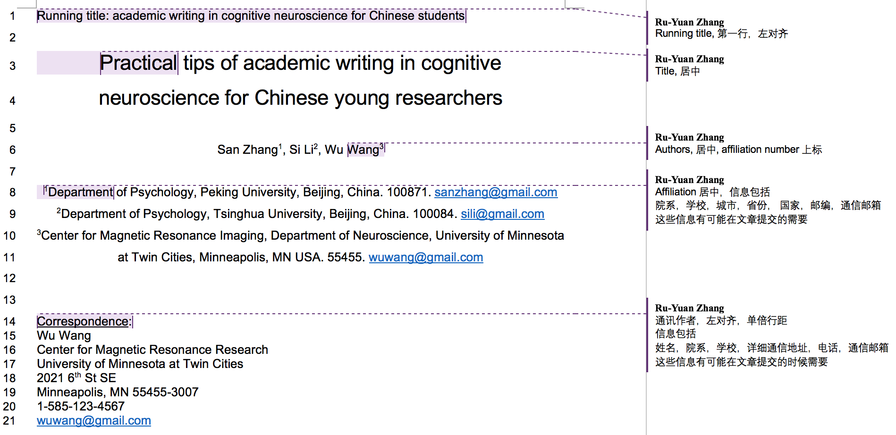
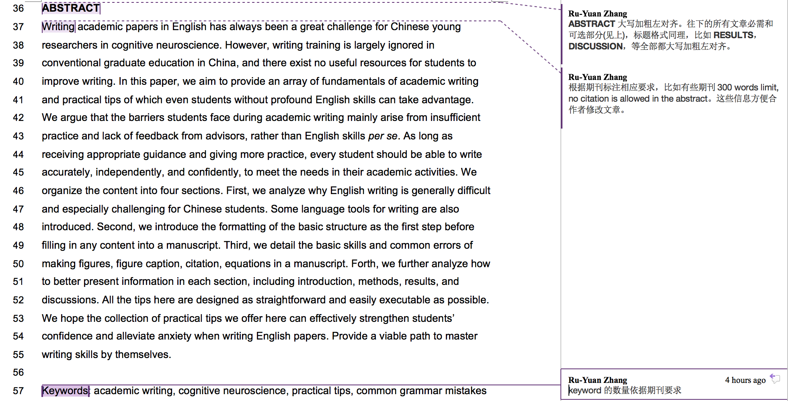

认知神经科学英文写作经验—文章架构格式(2)前言文章总体架构Word格式Title pageAbstractIntroduction/Methods and Materials/Results/DiscussionAuthor contributions/acknowlegments/conflict of interest
这篇文章基于这样一个情景，假设我们实验做完了，数据也分析好了，那么现在我们打开word，开始论文写作，我们应该从哪里入手呢？本文介绍了一些基本的行文结构的格式情况，这是打开word开始写论文之后，第一步做的，做到以下要求基本不需要任何英文语言基础。
在具体说格式之前，设想如果我是老师，我会指导学生贯彻这样两个原则:
快搭结构慢修细节
我希望一篇文章能先用最快的速度把行文大致逻辑，主要方法，结果，图片等先填充好，然后再花时间慢慢修改细节。在快速搭建架构的过程中，根本不在意语言是不是地道，语法是不是正确，图片细节是不是清晰，首先追求的是效率和速度。打磨细节是之后的事情。
格式风格标准化
不同的人对文章格式有不同的偏好，这本身没有什么原则问题(比如有人喜欢Arial字体，有人却喜欢Times New Roman)。但是我在帮学生修改文章的过程发现，很多时候学生因为缺乏经验对格式并没有一个清楚统一的认识，导致很多时候格式想当然而破坏了文章的整体性，增大了合作者写作修改的难度。
另外，相信很多时候导师会说"论文格式要清楚"，“格式要看起来干净整洁”。可是从学生的角度来说，到底什么叫做“清楚整洁”?对于初入英文论文写作的学生来说完全没有这些概念，这些要求都太模糊，而越具体的指令才越容易执行。所以在下面的Word一节中，我会详细列出来我平时用的格式细节，如果你真的毫无头绪下手那么直接照我说的做就可以，很多细节是我过去经验积累的结果。格式风格标准化绝不意味着某种格式是唯一正确的，而是让初学者能够快速入门减少出错，以及多人写作的时候降低沟通成本的方法。
这一部分尝试回答一些英文论文的大架构问题，也就是对全文的统筹格式，对各部分的具体格式要求请见后。为了避免有不清楚的地方，我还提供了一个papertemplate.docx的格式模板
确定该期刊方法(Methods and Materials)部分是放正文中，还是正文后
这个和你投稿的期刊有关系，确定了期刊这一步就能确定。方法放正文中还是后对结果部分(Results)的写作方式有较大影响。如果放正文，结果部分可以不用提及实验方法；如果方法放正文后，结果部分还要对实验方法进行一定的介绍。
确定该期刊是否接受补充材料
如果期刊接受补充材料，请另外创建一份word文档来作为补充材料。
请确认该期刊对补充材料的具体称谓，常见的有这么几种，Supplimentary/supplimental material/information/appendix。有时候称谓不对期刊编辑会要求修改。
图片和解释一定插入正文中而不是正文后
有些期刊确实要求所有的图片和图例放在正文以后或者另外上传，是为了印刷需要，但是在写作过程中一律放正文中间，方便索引，最后提交时根据期刊修改。
请首先确保有以下必要的文章部分(按顺序)
可选的文章部分(少数期刊要求)
以上无论必要还是可选文章部分，标题都在word里面大写加粗并左对齐(具体见下)。
Title page, abstract, introduction, methods and materials, results, discussion, references这几部分单起一页(和前面一部分用分页符分开)
请查阅期刊在每一部分以及全文的图标要求和字数限制，并旁批注到文中，以方便合作者修改论文。
统一全文字体为Arial，或者Times New Roman。
正文文字部分设置为12号(Times New Roman), 或者11号(Arial)。全文设置1.5倍行距(除了图注见下)。
加上全文连续的行号(line number)，页脚加上页码数。方便reviewer索引。
接着上面的总体要求，这部分以例子的方式解释每一个部分各自的格式要求。我以我们的papertemplate.docx的例子来说明
Title page下面包括了这样几个部分: running title, title, authors, affiliations, corresponding author information.

这部分包括abstract和keywords，见我们papertemplate.docx的例子

关于写作内容，请见后面文章。这里只讲格式，这几个部分的文字格式类似，但有一下几个注意点。
对每一个部分需要在旁边批注期刊要求，比如introduction的字数要求(e.g., 500 words)，以及全文的字数图片等要求(e.g., 4500 words in total, no more than 5 figures and/or tables)。明确批注要求方便合作者修改文章。
对于每个部分下面的子标题，在写作的时候一概不用数字标记，用大小写斜体加粗下划线等的组合就可以区分，最后提交的时候再根据期刊要求修改，比如:
METHODS AND MATERIALS （一级标题）
fMRI experiment （二级标题）
Data acquisition （三级标题）
EPI sequence （四级标题）
在方法(Methods and Materials)部分，除非是纯计算理论研究，只要涉及到人或者动物的实验，第一个部分通常是讲被试的情况，必须要包括Ethics statment说明研究经过伦理道德的批准并且遵守相关规定。例如
Subjects. Fourteen undergraduate students from University of Rochester (18 to 22 years old, 5 males and 9 females) took part in this study. All participants had normal or corrected-to-normal vision. The Research Subjects Review Board at the University of Rochester approved experimental protocols and confirmed that all research was performed in accordance with relevant guidelines and regulations. Informed consent forms were obtained from all participants.
这部分的格式和内容相对简单，复制一些模板即可, 比如以下例子:
ACKNOWLEDGMENTS 1
We thank Dr. Handsome Man for sharing model parameters in his work and Dr. Pretty Girl for invaluable comments on the manuscript. The work was supported by NIH Grants P41 EB123456, P30 NS45678, S10 RR123456, S10 567890-01, NSF NeuroNex Award DBI-1234567, the Gatsby Charitable Foundation, and the W.M. Keck Foundation.
AUTHOR CONTRIBUTIONS
W.W. conceived, designed research, S.Z., performed research; S.Z., W.W. wrote the draft of the paper. S.Z., S.L., and W.W. edited the paper.
CONFLICT OF INTEREST
The authors declare no competing financial interests. 2